The Open Science Bird
The Open Science Bird
Building the most open, transparent, reproducible nest in the forest
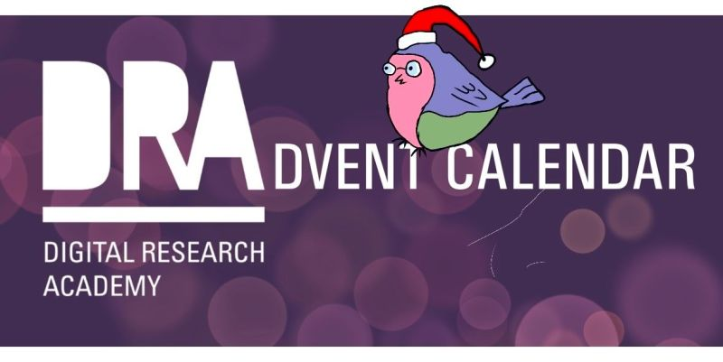
In a quiet winter forest, a small Open Science Bird decides to build the best nest ever.
Not just any nest but one built openly, so every creature can learn from it.
“If research is a nest,” she chirps, “then I am building mine so everyone benefits.”
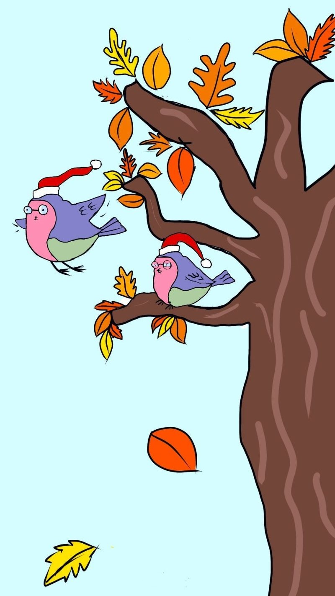
She sketches her nest design…
… and pins it to a tree trunk like a public notice board.
“Maybe someone can help me improve this” she says.
A squirrel adds a clever tweak; a hedgehog suggests reinforcing the base.
The blueprint becomes better with every pawprint.
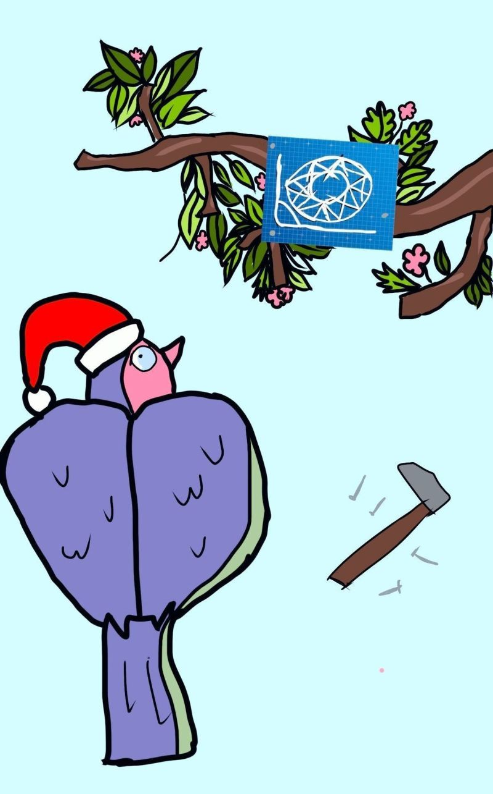
A sudden gust of wind snatches her blueprint, …
… well almost!
Luckily, she has all her versions tucked safely in her pinecone-based version control system.
She smirks, “Ha! Try blowing away v1.1, forest.”
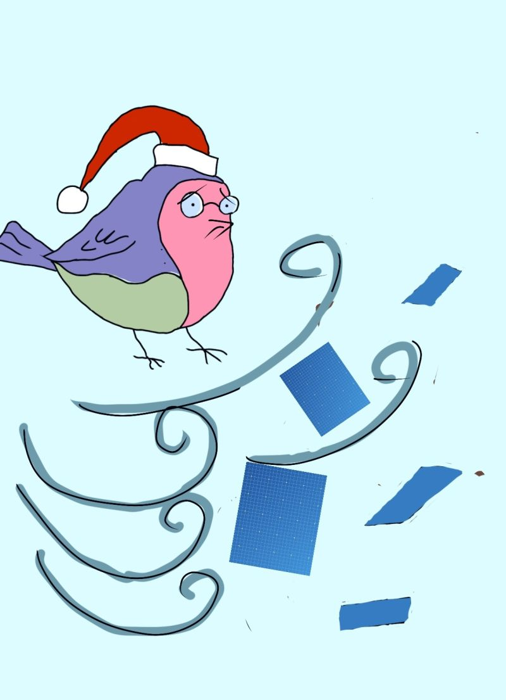
Before collecting a single twig, she drafts a Nest Management Plan…
What she will gather? where she will store it? and how long she will keep everything organised?
It feels good to see her thoughts laid out.
With a clear plan, the whole project suddenly feels lighter, calmer and completely manageable.
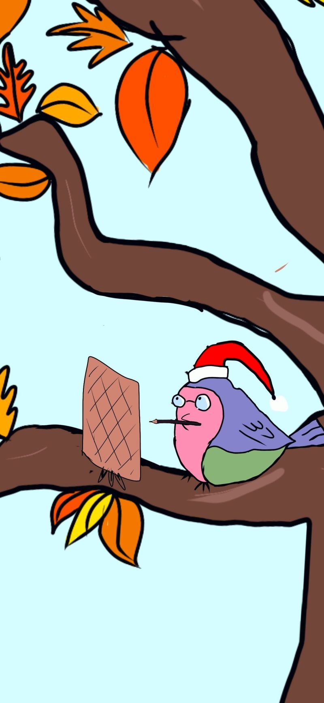
Collecting twigs turns into chaos…
Some are hidden, some crumble, some are the wrong shape, and many she finds only once and never again.
Moss and string aren’t any better.
By sunset she sighs, “Why is nothing findable around here?”
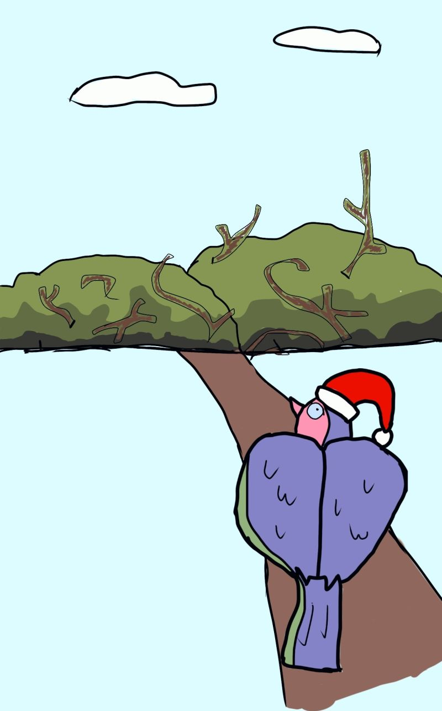
A flock flies by with the twigs she needs…
“Where did you get those?” she calls.
They shrug. “Somewhere near the stream? Maybe the oak?”
So she invites them to search together.
They compare notes, coordinate and map the forest-bendy twigs here, straight ones there, useless shrubs elsewhere.
Suddenly, the forest becomes navigable and the twig pile grows quickly.
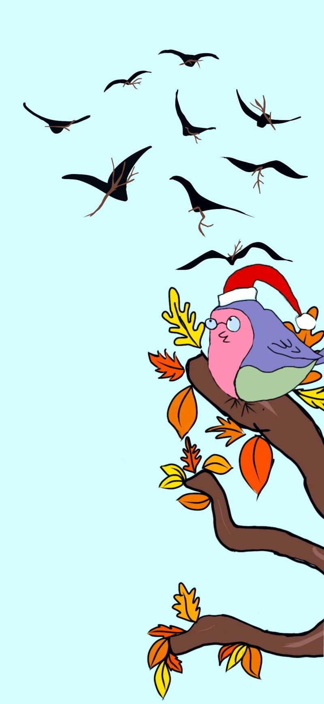
A mole shows her a perfect twig but can’t remember where he found it.
Without a record, the twig’s source is lost.
So she starts a simple reference list… every good twig gets its tree, location, and details noted.
Soon, no twig is ever “mysterious” again.
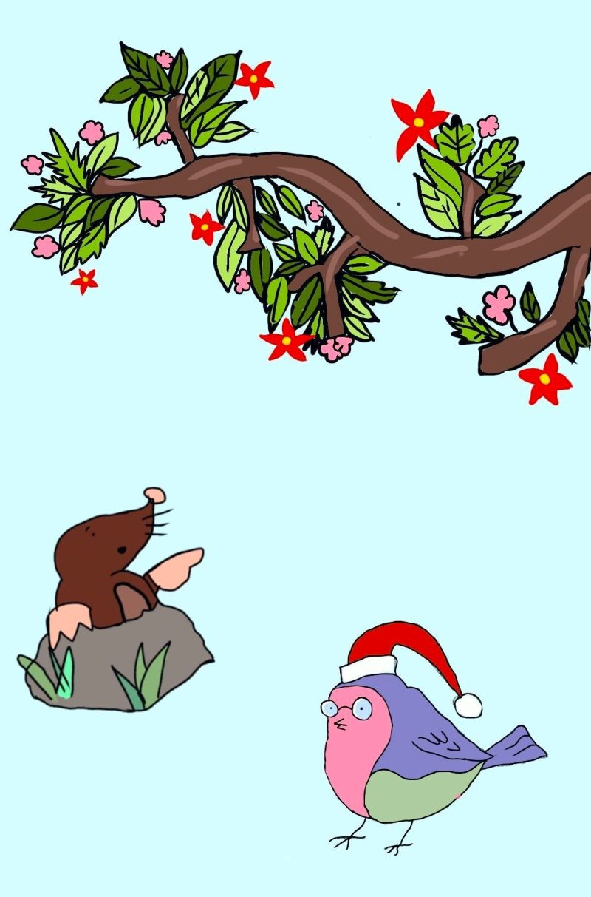
As her nest project grows, she realises she can’t keep up!
Random twigs everywhere, scattered notes, total chaos.
So she builds a simple project structure… a few clear docs, a small task board, and shared standards for how each twig should be added.
Suddenly, everything feels lighter.
New birds can join without confusion, everyone knows what to do, and the teamwork finally clicks around her.
Slowly, the nest base finally comes together.
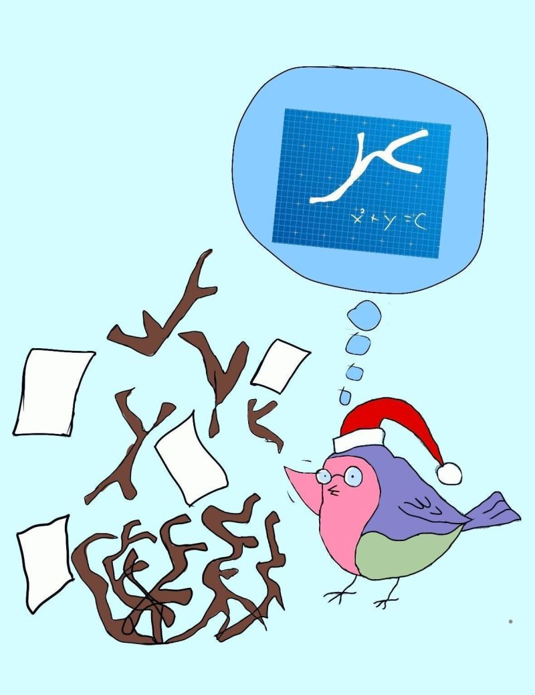
A curious raven asks, “How exactly are you layering the moss?”
The Open Science bird shares her full environment setup… temperature, humidity, moss thickness, twig density.
Now the raven can recreate the same comfy structure.
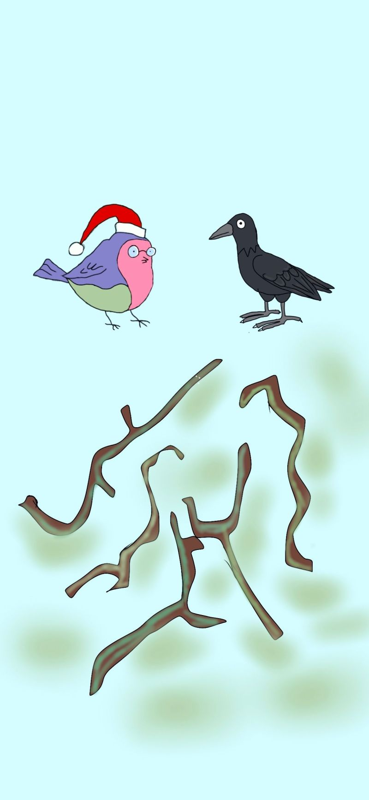
She writes tiny tests to ensure everything works as planned…
“Does this twig hold weight?”
“Does this moss absorb moisture?”
“Do these feathers resist wind?”
Everything passes, except the wind feathers. She adjusts them and the tests turn green.
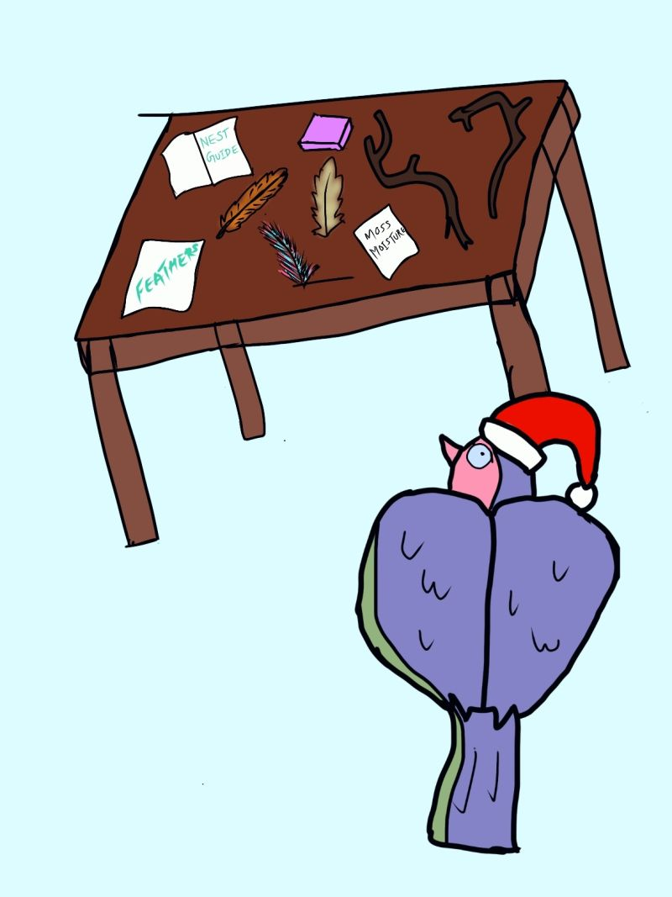
Halfway through building, she starts feeling overwhelmed by decisions…
… twig angle, moss layering, feather placement
… so many choices.
So she tries a new tool…
… a Large Limb Model—a tiny, Christmassy tree trained on thousands of historical nests.
It can suggest designs, compare structures and even draft a “best-practice twig plan.”
But she knows not to trust it blindly.
Some ideas don’t fit her forest; others sound confident but are not substantial.
So she uses it responsibly–cross-checking suggestions, keeping things ethical and transparent and making sure the final choices stay hers.
With thoughtful use, the LLM speeds up her building without replacing her expertise or her values.
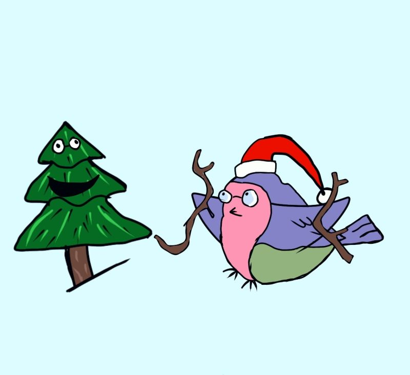
A curious owl wants to learn how she builds such sturdy nests but…
… instead of giving a long lecture, she hands him a “Nest Basics” guide to read before they meet.
When they gather later, they skip the boring explanations and jump straight into practicing twig placing techniques together.
Soon, more birds join in, all arriving prepared and ready to build.
The forest’s first flipped-classroom nest workshop is officially a hit.
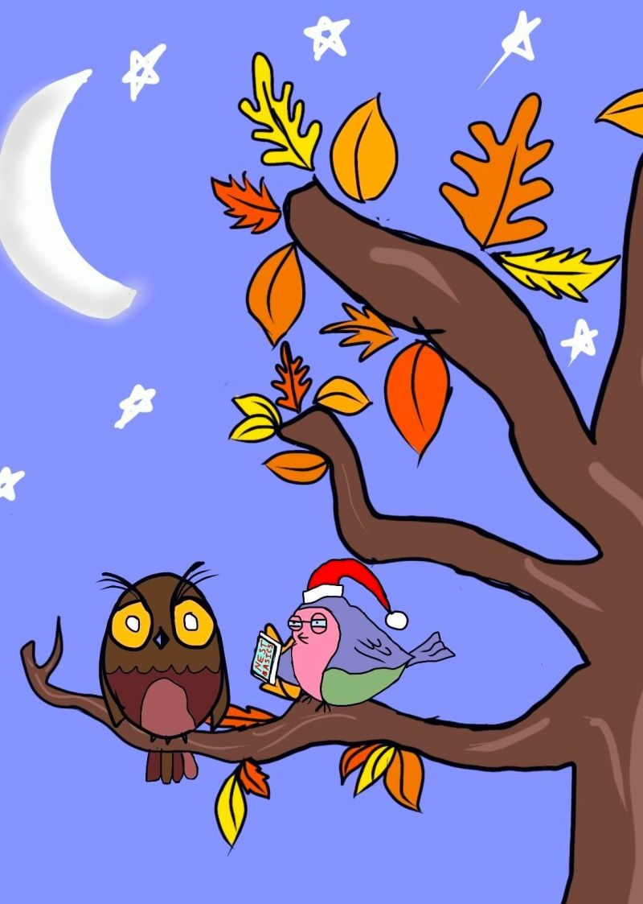
Before finishing her nest, she posts a preprint: “Preliminary Findings on Structurally Sound Nests.”
Other birds leave comments floating on the stream like little notes on leaves drifting past with friendly suggestions.
She updates her approach accordingly.
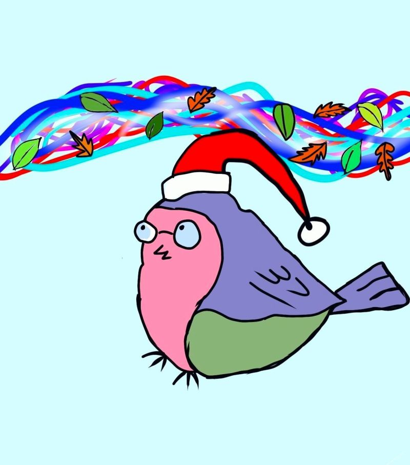
Her preprint becomes a fully published nest manual… freely available to every creature in the forest and beyond.
No paywalls here; all wings welcome.
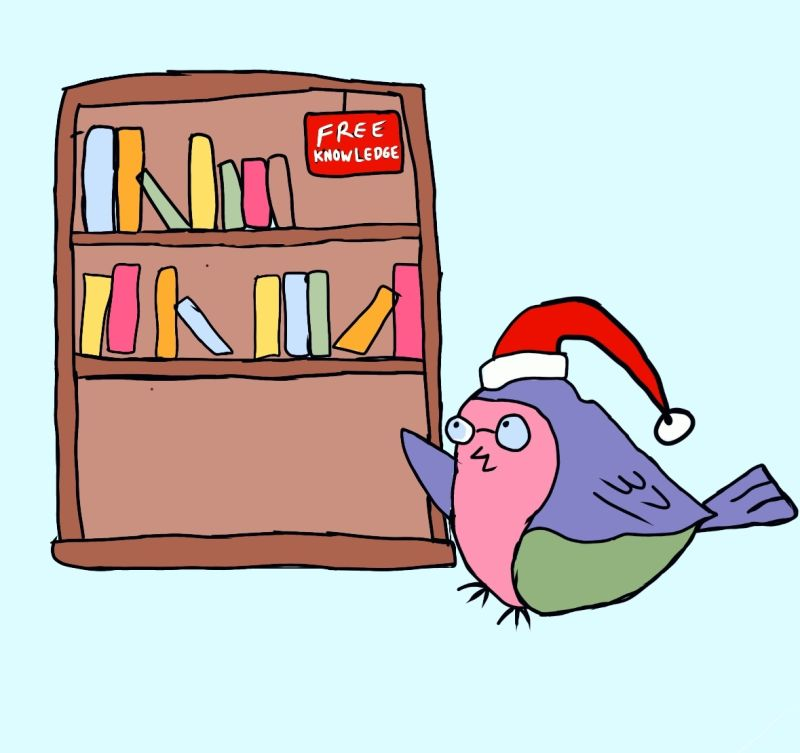
A snarky crow swoops down, inspecting the nest with a judgmental tilt of his head.
“Hmm,” he croaks, “but how prestigious is it? Did you build it in a high-impact tree?”
The Open Science Bird sighs. “Crow, not everything needs to be evaluated by how big the tree is. Good nests are judged by how well they work, not by the tree they’re built in.”
The crow blinks, confused then flaps off to find a bigger tree.
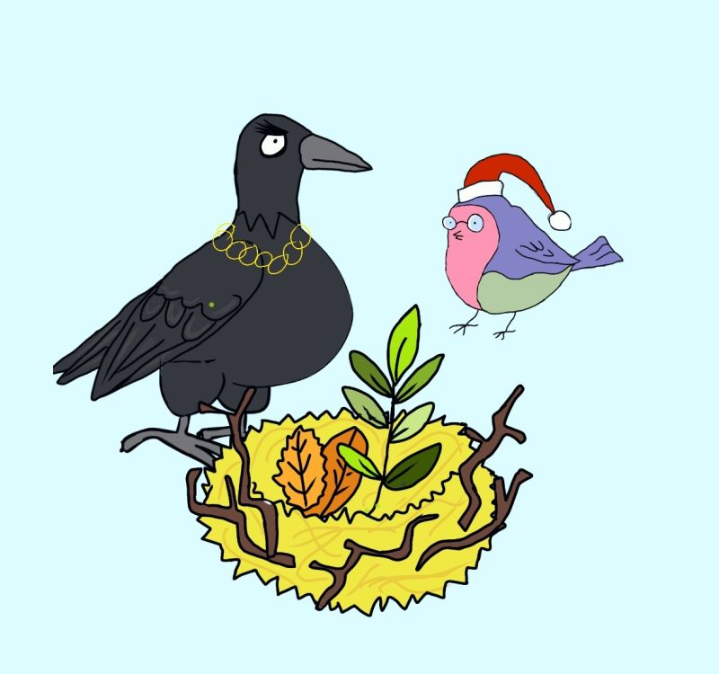
A friendly hedgehog suggests she promote her findings to help others build good nests.
She nods. “Right. Time to make a communication and advocacy plan!”
And so begins the Better Nest Initiative.
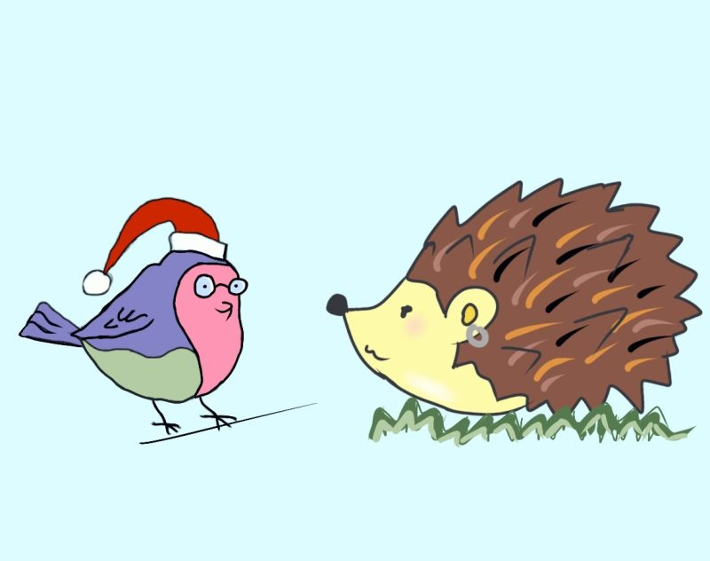
She reflects on her message.
What does she want to share about nest building?
Why does it matter?
Who will benefit?
… other nest-building animals, of course.
Clarity dawns like morning sunlight through the branches.
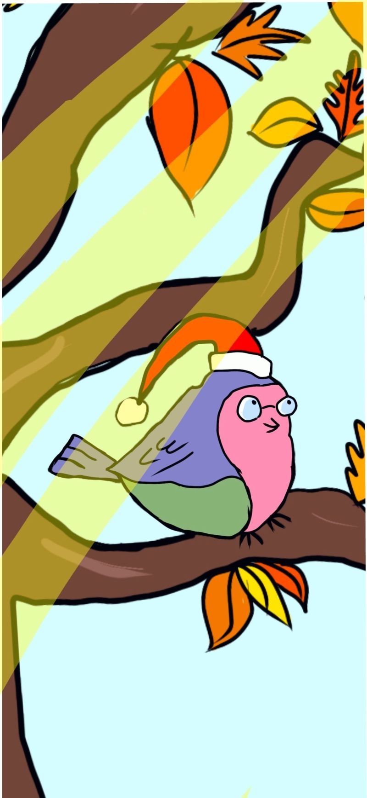
Now she thinks about how she wants to sound and look…
What tone? What visuals?
A logo? A signature feather motif?
Branding helps everyone recognize her communications instantly.
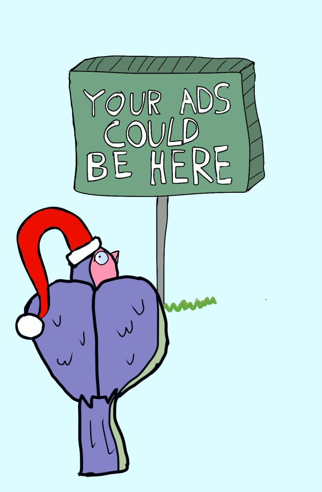
She brainstorms where to spread the word…
…forest conferences, birdsong networks, and of course the wide world of woodland internet.
Different channels for different audiences.
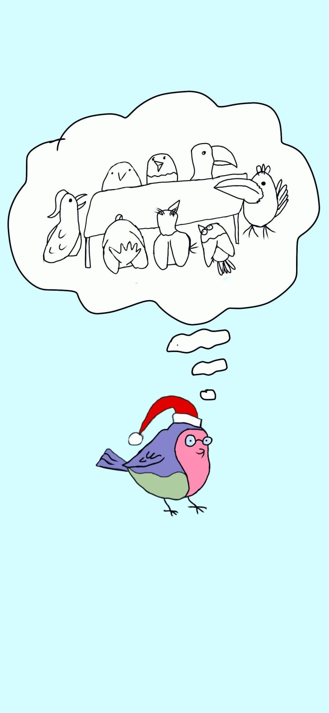